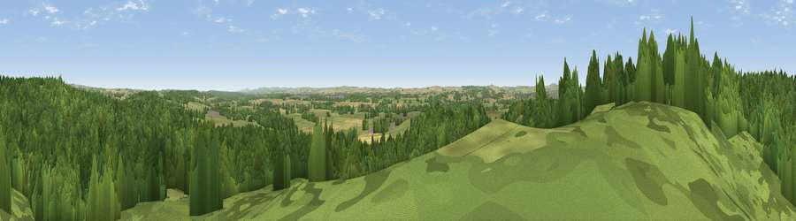

Viewpoint near Stinsford
#26704 in England · top 56% of its area beats it · near StinsfordWhere it is
The exact computed spot (SY 73575 92075). Click the marker for map links.
The view, rendered

A 360° render of this exact spot computed from the terrain model, tree cover and land cover — summer colours, afternoon light, calibrated against photographs of famous viewpoints. Real trees, hedges and buildings will differ in detail.
The panorama
Grey silhouette: terrain skyline in each direction (720 bearings, Earth curvature and refraction included). Dashed green: skyline with trees (+15 m) and buildings (+8 m) as obstacles. Blue strip: how far the ground is visible on each bearing.
Where the view opens
Wedge length = distance to the farthest visible ground on that bearing (vegetation-aware). Rings at 10, 25 and 50 km.
What fills the view
73% woodland · 17% grassland · 9% cropland ·
Angular shares of the visible panorama (visual magnitude), not map area. Landscape diversity 0.34 (0–1 Shannon).
Key numbers
More beautiful places nearby
The staircase of upgrades: each row has a higher view potential than everything closer. Driving times are estimates from straight-line distance, calibrated against real road routing — check an actual route before setting out.
| Place | Direction | Drive | Score |
|---|---|---|---|
| Viewpoint near Puddletown | NNE · 1 km | ~3 min | 47.1 |
| Viewpoint near Tincleton | E · 5 km | ~10 min | 50.8 |
| Viewpoint near Tincleton | E · 5 km | ~11 min | 52.4 |
| Viewpoint near Sutton Poyntz | SSW · 8 km | ~15 min | 65.6 |
| East Hill | SSW · 8 km | ~16 min | 79.6 |
| Viewpoint near Sutton Poyntz | SSW · 9 km | ~17 min | 79.9 |
| Viewpoint near Owermoigne | SSE · 10 km | ~20 min | 81.0 |
| Viewpoint near Chaldon Herring | SSE · 11 km | ~21 min | 82.9 |
50.72769, -2.37575 · source: screening · position refined by local search. Computed location — check access rights before visiting.